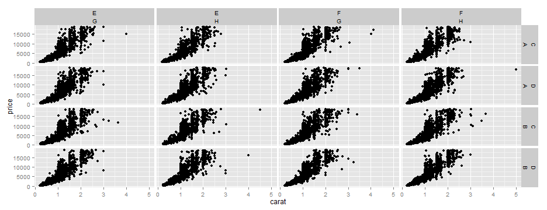
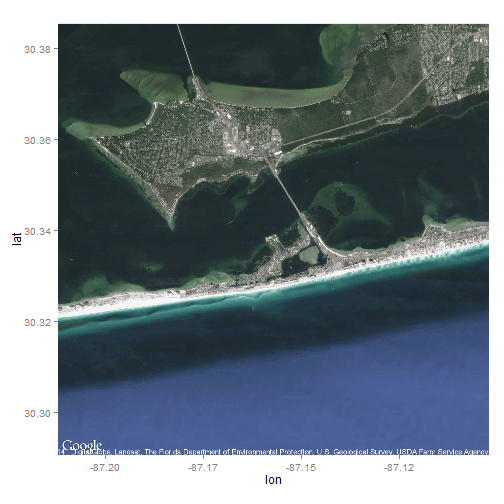
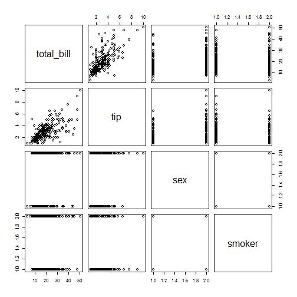
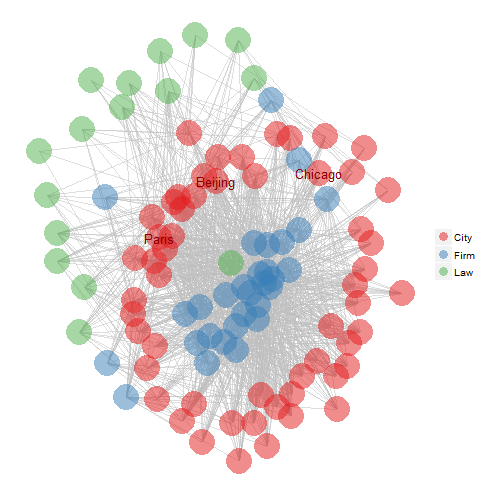

- facet_wrap, facet_grid
- themes, preset and custom
- ggmap
- ggally
What can you do w/ ggplot2 that you can't do w/ base functions?
Marcus Beck
ORISE post-doc
What can you do w/ ggplot2 that you can't do w/ base functions?
Facetting is one of the more powerful aspects of ggplot2
plot y vs x (or just x) by z, where z is some categorical variable
facet_grid or facet_wrap
data(diamonds)
head(diamonds)
## carat cut color clarity depth table price x y z
## 1 0.23 Ideal E SI2 61.5 55 326 3.95 3.98 2.43
## 2 0.21 Premium E SI1 59.8 61 326 3.89 3.84 2.31
## 3 0.23 Good E VS1 56.9 65 327 4.05 4.07 2.31
## 4 0.29 Premium I VS2 62.4 58 334 4.20 4.23 2.63
## 5 0.31 Good J SI2 63.3 58 335 4.34 4.35 2.75
## 6 0.24 Very Good J VVS2 62.8 57 336 3.94 3.96 2.48
p1 <- ggplot(diamonds, aes(x = carat,
y = price)) +
geom_point()
p1
p1 + facet_wrap(~color)
A simple scatterplot of diamond price by carat, facet_wrap by color

p1 + facet_grid(~color)
A simple scatterplot of diamond price by carat, facet_grid by color
What's the difference?

facet_wrap always has one horizontal facet label on the topp1 + facet_wrap(~ cut + color)

facet_grid can have both horizontal, vertical facet labelsp1 + facet_grid(cut ~ color)

facet_wrap orders facets by position in the callp1 + facet_wrap(~ color + cut) # same as facet_wrap(color ~ cut)
facet_wrap orders facets by position in the callp1 + facet_wrap(~ cut + color) # same as facet_wrap(cut ~ color)

facet_grid orders vertical/horizontal facets by left/right of tildep1 + facet_grid(cut ~ color) # not the same as facet_grid(~ cut + color)

facet_grid orders vertical/horizontal facets by left/right of tildep1 + facet_grid(color ~ cut) # not the same as facet_grid(~ color + cut)

scales argument for axes, otherwise fixedp1 + facet_wrap(~ color + cut, scales = 'free') # or 'free_x', 'free_y'
facet_grid treats scales differentlyp1 + facet_grid(color ~ cut, scales = 'free') # or 'free_x', 'free_y'

facet_wrap uses the ncol argumentp1 + facet_wrap(~ color + cut, ncol = 7)
facet_grid always creates a symmetrical plotp1 + facet_grid(~ color + cut)

diamonds$fake1 <- sample(c('A', 'B'), nrow(diamonds), replace = T)
diamonds$fake2 <- sample(c('C', 'D'), nrow(diamonds), replace = T)
diamonds$fake3 <- sample(c('E', 'F'), nrow(diamonds), replace = T)
diamonds$fake4 <- sample(c('G', 'H'), nrow(diamonds), replace = T)
head(diamonds[, grep('fake', names(diamonds))])
## fake1 fake2 fake3 fake4
## 1 B C E G
## 2 B C E H
## 3 B C E G
## 4 A C F G
## 5 A D F H
## 6 B C F G
p1 + facet_grid(fake1 + fake2 ~ fake3 + fake4)

facet_wrap and facet_grid accomplish similar tasks, with slight differences
facet_wrap
ncolfacet_grid
scales only affect outer facets
theme_grey()data(iris)
p2 <- ggplot(iris, aes(x = Sepal.Length,
y = Sepal.Width,
colour = Species)) +
geom_point()
p2
theme_bw() and...p2 + theme_bw()
theme_classic()p2 + theme_classic()
ggplot2::theme functionugly_theme <- theme(
panel.background = element_rect(fill = "green"),
axis.line = element_line(size = 3, colour = "red", linetype = "dotted"),
axis.text = element_text(colour = "blue"),
axis.ticks.length = unit(.85, "cm")
)
p2 + ugly_theme
ugly_default <- function(){
theme_grey() %+replace%
theme(
panel.background = element_rect(fill = "green"),
axis.line = element_line(size = 3, colour = "red", linetype = "dotted"),
axis.text = element_text(colour = "blue"),
axis.ticks.length = unit(.85, "cm")
)
}
theme_set(ugly_default())
p2
library(devtools)
install_github('ggthemes', username = 'jrnold')
library(ggthemes)
p2 + theme_wsj()
p2 + theme_gdocs()
p2 + theme_excel()

The basic idea of ggmap is to take a downloaded map image, plot it as a context layer using ggplot2, and then plot additional content layers of data, statistics, or models on top of the map.
get_mapinstall.packages('ggmap')
library(ggmap)
# get map by location
loc <- 'Environmental Protection Agency, 1 Sabine Drive, Gulf Breeze, FL'
my_map <- get_map(
location = loc,
source = 'google',
maptype = 'terrain',
zoom = 13
)
ggmapggmap(my_map, extent = 'panel')
pts <- data.frame(
lon = c(-87.1930, -87.2050, -87.1571),
lat = c(30.3473, 30.3406, 30.3380),
lab = c('Site 1', 'Site 2', 'Home')
)
ggmap(my_map, extent = 'panel',
base_layer = ggplot(pts,
aes(x = lon, y = lat))) +
geom_text(aes(label = lab))
my_map <- get_map(
location = loc,
source = 'google',
maptype = 'satellite',
zoom = 13
)
ggmap(my_map, extent = 'panel')

data(tips, package = "reshape2")
pairs(tips[, 1:4])

install.packages('GGally')
ggpairs(tips[, 1:4])

install.packages('GGally')
ggpairs(tips[, 1:4])
install.packages('GGally')
ggpairs(
tips[,1:4],
upper = list(continuous = "density",
combo = "box"),
lower = list(continuous = "points",
combo = "dot")
)
ggparcoord(data = iris, columns = 1:4,
groupColumn = 5,
order = "anyClass")
library(sna)
url = url("http://networkdata.ics.uci.edu/
netdata/data/cities.RData")
print(load(url)); close(url)
# plot cities, firms and law firms
type = cities %v% "type"
type = ifelse(grepl("City|Law", type),
gsub("I+", "", type), "Firm")
ggnet(cities, mode = "kamadakawai",
alpha = .5, node.group = type,
label.nodes = c("Paris", "Beijing",
"Chicago"),
color = "darkred")

ls(pattern = '^geom_', env = as.environment('package:ggplot2'))
## [1] "geom_abline" "geom_area" "geom_bar"
## [4] "geom_bin2d" "geom_blank" "geom_boxplot"
## [7] "geom_contour" "geom_crossbar" "geom_density"
## [10] "geom_density2d" "geom_dotplot" "geom_errorbar"
## [13] "geom_errorbarh" "geom_freqpoly" "geom_hex"
## [16] "geom_histogram" "geom_hline" "geom_jitter"
## [19] "geom_line" "geom_linerange" "geom_map"
## [22] "geom_path" "geom_point" "geom_pointrange"
## [25] "geom_polygon" "geom_quantile" "geom_raster"
## [28] "geom_rect" "geom_ribbon" "geom_rug"
## [31] "geom_segment" "geom_smooth" "geom_step"
## [34] "geom_text" "geom_tile" "geom_violin"
## [37] "geom_vline"
Easy facetting, pre-loaded and customized themes, spatial data, pairs plots...
See online documentation for more comprehensive descriptions
Presentation materials available here
EPA, NHEERL slidify template from Jeff's repo